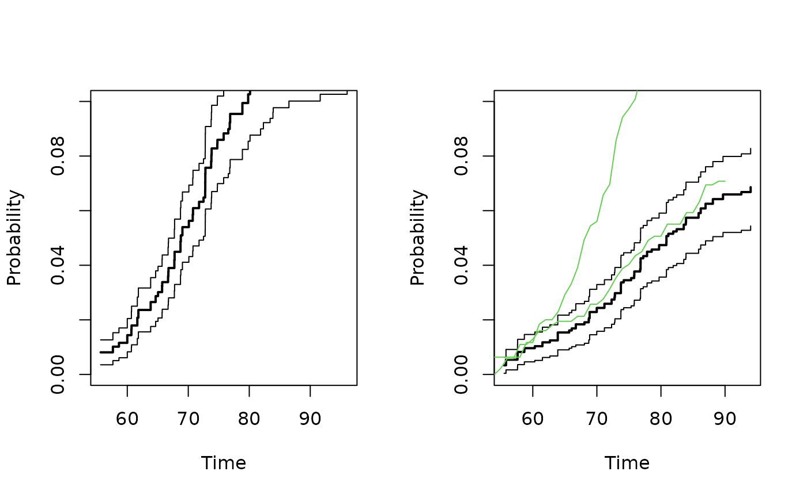

Estimation of concordance in bivariate competing risks data
Usage
bicomprisk(
formula,
data,
cause = c(1, 1),
cens = 0,
causes,
indiv,
strata = NULL,
id,
num,
max.clust = 1000,
marg = NULL,
se.clusters = NULL,
wname = NULL,
prodlim = FALSE,
messages = TRUE,
model,
return.data = 0,
uniform = 0,
conservative = 1,
resample.iid = 1,
...
)Arguments
- formula
Formula with left-hand-side being a
Eventobject (see example below) and the left-hand-side specying the covariate structure- data
Data frame
- cause
Causes (default (1,1)) for which to estimate the bivariate cumulative incidence
- cens
The censoring code
- causes
causes
- indiv
indiv
- strata
Strata
- id
Clustering variable
- num
num
- max.clust
max number of clusters in timereg::comp.risk call for iid decompostion, max.clust=NULL uses all clusters otherwise rougher grouping.
- marg
marginal cumulative incidence to make stanard errors for same clusters for subsequent use in casewise.test()
- se.clusters
to specify clusters for standard errors. Either a vector of cluster indices or a column name in
data. Defaults to theidvariable.- wname
name of additonal weight used for paired competing risks data.
- prodlim
prodlim to use prodlim estimator (Aalen-Johansen) rather than IPCW weighted estimator based on comp.risk function.These are equivalent in the case of no covariates. These esimators are the same in the case of stratified fitting.
- messages
Control amount of output
- model
Type of competing risk model (default is Fine-Gray model "fg", see comp.risk).
- return.data
Should data be returned (skipping modeling)
- uniform
to compute uniform standard errors for concordance estimates based on resampling.
- conservative
for conservative standard errors, recommended for larger data-sets.
- resample.iid
to return iid residual processes for further computations such as tests.
- ...
Additional arguments to timereg::comp.risk function
References
Scheike, T. H.; Holst, K. K. & Hjelmborg, J. B. Estimating twin concordance for bivariate competing risks twin data Statistics in Medicine, Wiley Online Library, 2014 , 33 , 1193-204
Examples
library("timereg")
## Simulated data example
prt <- simnordic.random(2000,delayed=TRUE,ptrunc=0.7,
cordz=0.5,cormz=2,lam0=0.3)
## Bivariate competing risk, concordance estimates
p11 <- bicomprisk(Event(time,cause)~strata(zyg)+id(id),data=prt,cause=c(1,1))
#> Strata 'MZ'
#> Strata 'DZ'
p11mz <- p11$model$"MZ"
p11dz <- p11$model$"DZ"
par(mfrow=c(1,2))
## Concordance
plot(p11mz,ylim=c(0,0.1));
plot(p11dz,ylim=c(0,0.1));
## entry time, truncation weighting
### other weighting procedure
prtl <- prt[!prt$truncated,]
prt2 <- ipw2(prtl,cluster="id",same.cens=TRUE,
time="time",cause="cause",entrytime="entry",
pairs=TRUE,strata="zyg",obs.only=TRUE)
prt22 <- fast.reshape(prt2,id="id")
prt22$event <- (prt22$cause1==1)*(prt22$cause2==1)*1
prt22$timel <- pmax(prt22$time1,prt22$time2)
ipwc <- timereg::comp.risk(Event(timel,event)~-1+factor(zyg1),
data=prt22,cause=1,n.sim=0,model="rcif2",times=50:90,
weights=prt22$weights1,cens.weights=rep(1,nrow(prt22)))
p11wmz <- ipwc$cum[,2]
p11wdz <- ipwc$cum[,3]
lines(ipwc$cum[,1],p11wmz,col=3)
lines(ipwc$cum[,1],p11wdz,col=3)
